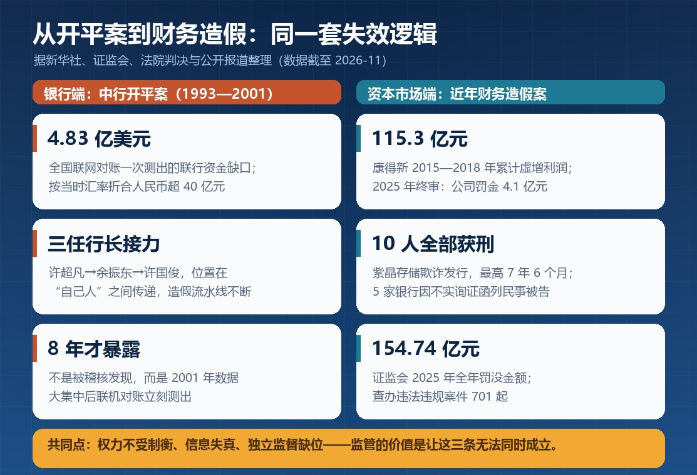

2001 年 10 月 12 日，中国银行首次把全国 1040 处电脑中心联成一套系统，联机对账立刻测出 4.83 亿美元联行资金缺口。追查下来，线头落在广东开平一家县级支行，而前后三任行长许超凡、余振东、许国俊已同时失踪。这起被称为新中国成立以来最大银行资金盗窃案的案件，持续了约 8 年，最终不是被内部稽核发现，而是被一次技术架构升级照了出来。银行尚且有这么大的漏洞，上市公司的报表又能可靠到什么程度？这个问题，在此后二十多年的财务造假案里被反复回答。
把开平案和近年的上市公司造假放在一起看，会发现它们的失效逻辑几乎是同一套：权力不受制衡、信息可以失真、独立监督缺位。监管的意义，恰恰在于让这三条不能同时成立。

一、事实层面：一个县级支行如何漏出 4.83 亿美元
据人民网、新浪财经等公开报道，1993 年至 2001 年间，许超凡、余振东、许国俊利用中国银行联行资金管理漏洞，以企业名义办理虚假贷款套取资金、截留企业正常还贷、账外放贷，再把资金经香港的空壳公司和地下钱庄转出境外。仅 1998 年 3 月之后的两年，经香港通道转出的资金就达 7500 万美元。案发后三人经香港出境，最终目的地是美国；许超凡外逃 17 年，于 2018 年 7 月被遣返回国，2021 年被判有期徒刑 13 年；余振东 2004 年经辩诉交易遣返，被判 12 年；许国俊 2021 年遣返，2023 年被判无期徒刑。
漏洞首先出在权力结构上。当时中行实行从总行到县支行的四级管理、四级经营架构，支行行长几乎等于一家小银行的行长，权力几无边界。许超凡在任期间同时掌握财务管理、核算管理、授权管理，还曾管人事和行政；财务权、核算权、人事权集于一身，本应存在的制约完全空转。更能说明问题的是，他调任省分行后，接班的是同案的余振东，再往后是许国俊——位子在“自己人”之间传递，那本见不得光的账也就顺利交接下去。案发后，开平支行股长以上人员被全部调换。
漏洞还出在信息结构上。当时各分支机构电脑系统各自建设、网络割裂，总行与分支行之间、资金汇划与总行确认之间存在数天甚至数月的时间差。三人的手法正是把盗用的资金打入联行资金项下，把亏空伪装成对总行联行系统的欠款，再用新账补旧账，逐级把窟窿转嫁到总行。换句话说，总行看到的是下级欠款，看不到下级亏空。稽核体系又附属于各级分支机构，由上一级检查下一级，对开平的稽核只要瞒过江门分行即可，且稽核没有处罚权、不敢干预违规，长期停留在纠正一般业务差错。
还有一个容易被忽略的背景：舞弊的起点是违规叙做外汇买卖产生亏损，为填窟窿才开始盗用联行资金。1995 年中行禁止下属银行叙做外汇买卖、外汇局开展大检查后，舞弊并未停止，而是转入更大规模造假。这说明当内控目标让位于业务冲动时，技术漏洞只是条件，真正的缺口在治理。
二、同类案例：同样的失效逻辑，换到了上市公司
康得新把这条路走到了极端。据证监会调查与 2025 年 12 月江苏高院终审裁定，2015 年至 2018 年，康得新通过虚构销售业务、虚构采购、生产、研发与运输费用，累计虚增利润总额 115.3 亿元，其中 2018 年虚增利润占当期披露利润总额的 711.29%。公司因欺诈发行证券罪、骗购外汇罪被罚金 4.1 亿元，董事长钟玉被判有期徒刑 15 年、罚金 2020 万元，财务总监王瑜获刑 13 年。这里的权力结构同样是“一言堂”：造假由核心人物策划主导，财务、业务、费用各环节配合完成，独立复核形同虚设。
紫晶存储展示了造假生态化的一面。这家科创板公司 2023 年 7 月被强制退市，2025 年 12 月刑事判决显示，公司因欺诈发行证券罪被罚金 3700 万元，10 名高管全部获刑，最高刑期七年六个月；民事层面，4 家中介机构先行赔付约 10.86 亿元后反向追偿，把 48 名主体列为被告，其中首次包括 5 家涉嫌出具不实银行询证函的商业银行。这一细节值得注意：造假的关节不只在上市公司体内，还在银行、供应商、客户和中介。当银行回函失守，它就从内控问题变成了民事赔偿甚至共同违法的问题——这正是开平案教训在资本市场中的延伸。
恒大地产则是信息失真的另一个版本。据证监会公布的投资者保护典型案例，2019 年至 2020 年，恒大地产通过提前确认收入虚增收入和利润，导致债券发行构成欺诈发行；2024 年 5 月被罚款 41.75 亿元，许家印被顶格罚款 4700 万元并终身市场禁入；同年 9 月，证监会与财政部对审计机构普华永道合计罚没 4.41 亿元。会计规则并不复杂，复杂的是当增长目标压倒一切时，总收入确认时点也能成为腾挪空间。
金通灵案则说明监管的闭环如何落到投资者身上。2017 年至 2022 年连续 6 年虚增或虚减利润，其中 2021 年虚增利润总额占当年披露利润总额绝对值的 5774.38%。2025 年 12 月，南京中院先行判决公司赔偿 43269 名投资者损失共 7.7479 亿元；2026 年 2 月赔偿款划转到位，损失 25 万元以下的投资者获全额清偿，占投资者总人数的 99.11%。造假的成本，终于不再只是罚单上的数字。
三、分析：监管为什么是必需品，而不是补充品
第一，内部控制和外部监管是两层，不能互相替代。中行当年并非没有制度，也不是没有稽核部门，但“自己查自己”的架构下，控制点可以被系统性绕过。外部监管的核心价值不是替企业做内控，而是迫使内控无法被掏空——通过不相容岗位分离、授权上收、重要岗位轮岗与强制休假、系统留痕、独立审计和真实处罚，让权力不能一个人说了算，让账不能只由一方来做。
第二，监管的本质是提高舞弊的预期成本。造假之所以反复发生，是因为在一段时期里收益远大于代价。刑法修正案（十一）把欺诈发行刑期上限由 5 年提高到 15 年，个人罚金取消了募集资金 1% 至 5% 的上限；2024 年 7 月国办转发《关于进一步做好资本市场财务造假综合惩防工作的意见》，把事前预警、事中监控、事后追责连成链条。康得新 4.1 亿元罚金与 15 年刑期、紫晶存储 10 人全部获刑，都是这条逻辑的落地。
第三，造假已经生态化，监管必须全链条、跨部门。证监会 2025 年执法情况显示，全年查办违法违规案件 701 起、罚没 154.74 亿元，其中财务造假专项行动查办 97 起，65 家上市公司、392 名责任人被罚；同时处罚 66 家中介机构、罚没 6.02 亿元，永拓会计师事务所被永久禁业；全年向地方政府及部委移交 869 家配合造假主体线索。越博动力、高鸿股份等案首次认定配合造假方构成共同违法并按共犯处罚。这意味着，帮助造假的第三方不再能全身而退。
第四，制度沉淀比个案处罚更重要。开平案之后，中国银行业完成了三项结构性改造：数据大集中让全国联机对账成为常态，消灭了联行时间差这一舞弊的物理空间；权限上收切断了基层行直接与境外资金汇划的渠道；2002 年人民银行发布《商业银行内部控制指引》，2014 年银监会修订发布，明确全覆盖、制衡性、审慎性、相匹配四项原则，并要求账证账表定期核对、重要岗位轮岗或强制休假、内控失效造成重大损失时董事会和高管层承担管理责任。这些条款几乎逐条对应开平案暴露的问题——好的制度，都是用代价换来的。
四、趋势判断：监管正在从事后处罚走向系统治理
从数据看，惩防体系已出现可见效果。证监会 2025 年执法通报显示，信息披露违法案件同比下降 19.68%，中介机构违法案件同比下降 18.95%，财务造假案件数量首次出现趋势性下降；与此同时，内幕交易案件同比增长 22.47%，操纵市场案件增长 19.72%，说明监管重心在随之迁移，违法形态也在变化。2026 年 1 月，证监会会同 11 个部门召开财务造假综合惩防跨部门推进会，建立线索常态化移送机制，治理进入深水区。
下一阶段有三个方向值得关注。其一，责任链条继续向外延伸。紫晶存储把 5 家银行列为民事被告，泽达易盛与紫晶存储两案的中介反向追偿合计达 14.58 亿元，倒逼银行、审计、保荐、律师等节点真正履行验证义务。其二，技术监管会前移。大数据建模、年报审阅、舆情监测与举报渠道的组合，让异常更早被发现；开平案靠系统升级才照出窟窿的历史，正在被实时监控取代。其三，投资者保护会从宣示走向兑现。特别代表人诉讼、先行赔付、先行判决等机制已经让赔偿到账，未来赔付范围与责任认定还会继续细化。
对金融机构和上市公司而言，启示是朴素的：任何依赖个人信用、信息时差和监督放水的运转方式，迟早都要付出代价。对产业观察者而言，更该看到另一层——金融体系的公信力不是靠宣传建立的，而是靠一笔一笔查清的账、一个一个兑现的判决积累起来的。监管越可置信，市场的交易成本才越低，资本才敢流向真正创造价值的领域。
结语
开平案过去二十多年了，作案手法早已落伍，但它提出的问题没有过时：权力必须被切割，信息必须可穿透，监督必须外部化且可置信。银行尚且如此，上市公司更是如此——规模越大、链条越长，一个被绕过的控制点造成的破坏就越大。监管不是市场的对立面，而是市场能够存在的前提。把这一点看清楚，才算真正读懂了从开平到康得新的这一串案例。